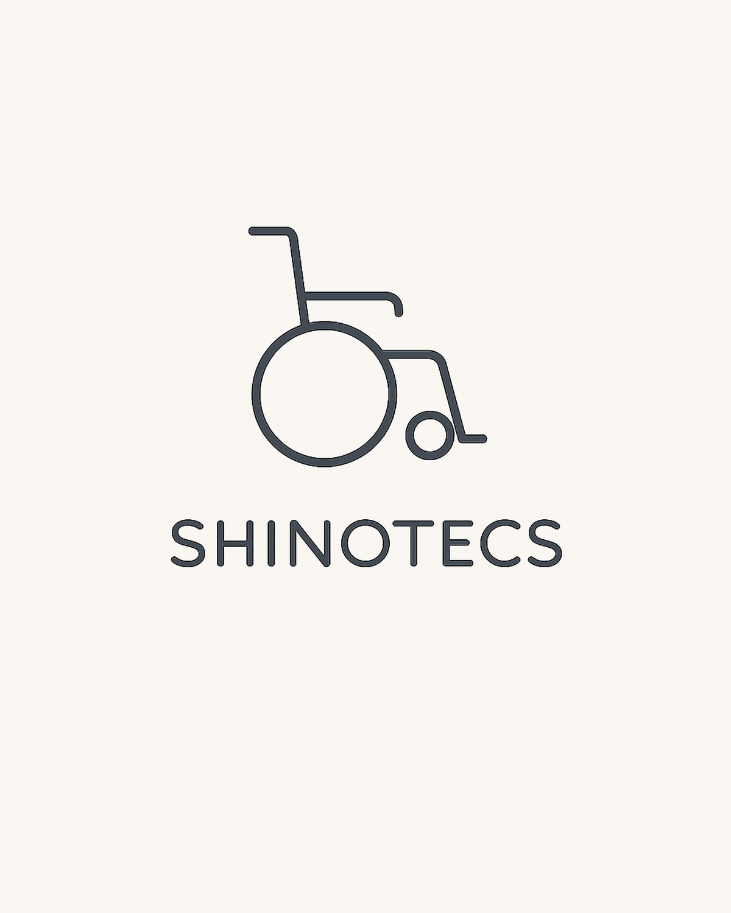

福祉用具事業
福祉用具貸与事業所「シノテクス株式会社」では、車いす、特殊寝台、歩行器などの福祉用具のレンタル・販売から、 高度管理医療機器の販売・賃貸、住宅改修のご相談まで対応しています。 ご利用者様の状況やご希望に合わせて、暮らしを多面的に支えるご提案を行っています。

取り扱うサービス
福祉用具事業では、暮らしに必要な道具や住環境のご相談まで、幅広く対応しています。
Item 01
福祉用具のレンタル
車いす、特殊寝台、歩行器、手すり、スロープなど、介護保険制度に基づいた福祉用具を貸与します。 状況の変化に応じて適切なものへ柔軟に切り替えていただけます。
Item 02
福祉用具の販売
入浴補助用具、ポータブルトイレなど、衛生上レンタルになじまない特定福祉用具を販売します。 介護保険給付の対象品目に対応しています。
Item 03
高度管理医療機器の販売・賃貸
高度管理医療機器等販売賃貸業の許可(第811920号)に基づき、ご家庭で必要な医療機器の販売・賃貸にも対応しています。
Item 04
住宅改修
手すりの設置、段差の解消、滑り止めの設置など、ご自宅で安全に暮らしていただくための改修工事をご案内します。 介護保険を活用したご相談も承ります。
Item 05
中古福祉用具の取扱い
古物商許可(第431110032515号)を取得しており、状態の良い中古福祉用具のご相談にも応じます。 費用を抑えたい場合の選択肢としてご利用いただけます。
福祉用具事業の
ご利用の流れ
ご相談からお届けまで、福祉用具専門相談員が丁寧に対応いたします。
Step 01
お問い合わせ
お電話・FAX・メールから、お気軽にご相談ください。
Step 02
ご訪問・状況確認
担当者がご自宅へ訪問し、生活環境と必要な用具を確認します。
Step 03
お見積もり・ご契約
用具のご提案と見積をご説明し、ご納得いただいたうえで契約となります。
Step 04
納品・継続支援
用具をお届けし使い方をご説明。納品後も状況に応じて点検・調整します。
事業所情報
-
事業所名
福祉用具貸与事業所
「シノテクス株式会社」 - 介護保険指定番号 No. 1176001020
-
関連許認可
高度管理医療機器等販売賃貸業 第811920号
古物商許可 第431110032515号 - 所在地 埼玉県坂戸市千代田1-1-29 第5武井ビル202
対応エリア
シノテクスの福祉用具事業は、埼玉県坂戸市を拠点に、近隣市町村へ配送・設置・アフターサービスを行っています。介護保険でのレンタルは対象地域を絞って丁寧に対応し、介護保険外のレンタル・販売については、上記の対応エリアに加えて埼玉県内ほぼ全域へとサービス範囲を広げています。
※ 上記地域以外の方も、まずはお気軽にご相談ください。
介護保険レンタル対応
介護保険適用でのレンタルに対応する地域です。
- 坂戸市
- 川越市
- 鶴ヶ島市
- 狭山市
- 入間市
- さいたま市
- 東松山市
- 毛呂山町
- 越生町
- その他近隣地域
介護保険外レンタル・販売
介護保険対象外の用具やご利用者様には、より広い範囲でご対応します。
— Wider Coverage
左記の対応エリアに加えて、川口市・新座市・所沢市・朝霞市・志木市・上尾市など、埼玉県内ほぼ全域でご対応いたします。
短期レンタルや見守り・サポート用品など、用途に合わせてご提案可能です。
よくあるご質問
福祉用具のレンタル・販売に関するご質問にお答えします。
こちらにないご質問もお気軽にお問い合わせください。
Q. 福祉用具のレンタルは介護保険で利用できますか?
はい、原則として要介護認定(要支援1〜要介護5)を受けている方は、介護保険を利用して1割〜3割の自己負担でレンタルできます。対象となる福祉用具は車いす、特殊寝台、歩行器、手すりなどです。介護度や福祉用具の種類によって対象が異なるため、まずはお気軽にご相談ください。
Q. 介護保険対象外でも福祉用具をレンタル・購入できますか?
はい、可能です。要介護認定を受けていない方や、介護保険対象外の用具のレンタル・販売にも対応しております。介護保険対応エリアに加えて、川口市・新座市・所沢市・朝霞市・志木市・上尾市など埼玉県内ほぼ全域でご対応が可能です。短期間のレンタルや、ご家族の見守り・サポート用品のご相談も承ります。
Q. 住宅改修(手すり設置・段差解消など)もお願いできますか?
はい、介護保険の住宅改修制度を活用した手すり設置、段差解消、滑り防止床材への変更、扉の取替え、洋式便器への取替えなどに対応しています。申請手続きから工事完了まで一貫してサポートします。
Q. 費用やレンタル料金はどのくらいかかりますか?
福祉用具レンタルの場合、介護保険適用で月額1,000円〜数千円程度(自己負担分)が目安です。福祉用具の種類によって料金は異なります。介護保険外のレンタル・販売についても、ご予算に合わせたご提案が可能ですので、お気軽にお問い合わせください。
Q. 対応エリア外の地域でも相談できますか?
介護保険外のレンタル・販売であれば、上記の介護保険対応エリアに加えて、川口市・新座市・所沢市・朝霞市・志木市・上尾市など埼玉県内ほぼ全域に対応しております。お問い合わせいただければ、ご希望の内容に合わせてご提案いたします。
Q. 中古の福祉用具も購入できますか?
はい、当社は古物商許可(第431110032515号)を有しており、中古福祉用具の販売も行っております。新品より費用を抑えてご利用いただけるため、ご予算に合わせてご検討ください。
福祉用具のご相談、
承ります。
お電話・FAX・メールにて、ご相談を承っております。
ご利用者様、ご家族、ケアマネジャーの方、どなたからでもお気軽にお問い合わせください。